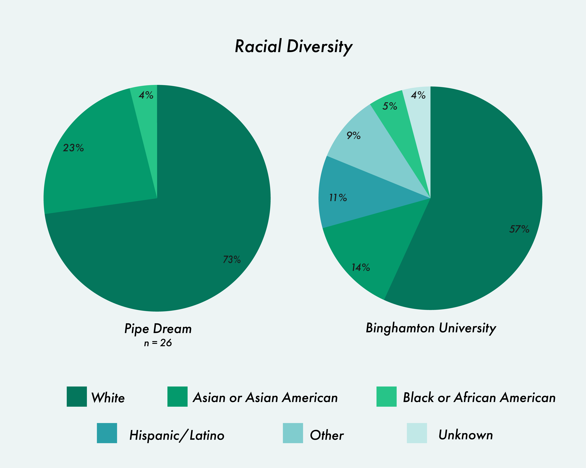
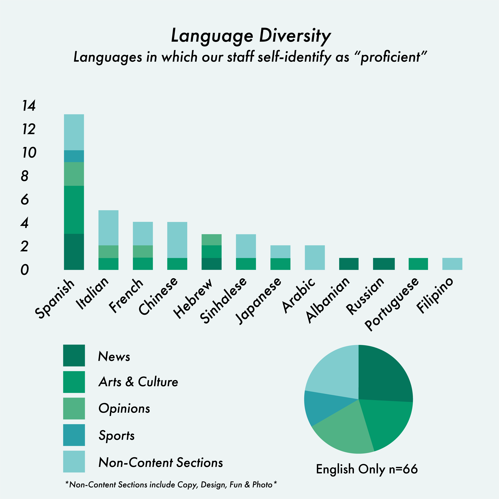
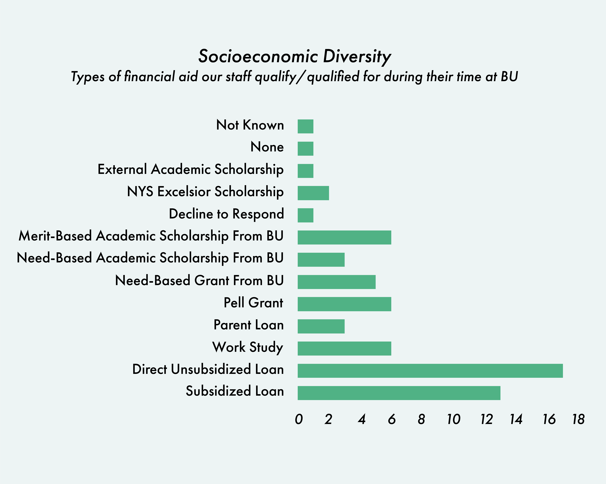

This series of graphics were created as a part of Pipe Dream's diversity report for the Spring 2021 semester. Data was collected from all staff and contributors and then compiled into a cumulative set. I then set to work creating graphs that clearly, and accurately, displayed the given data. I kept my color palette simple and included nods to our schools' recognizable Pantone 342 green.
  